Coastal Corridor Alliance
Rebrand strategy, conservation identity, logo development, website direction, apparel, and campaign applications
A conservation rebrand built around land, wildlife, and a larger connected mission.
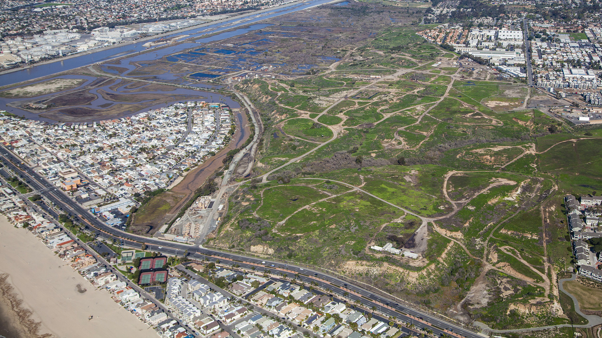
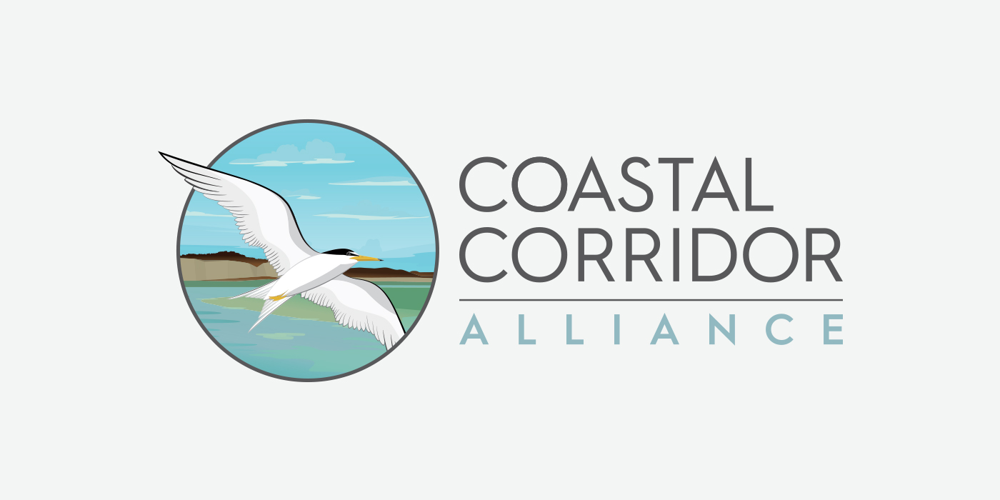
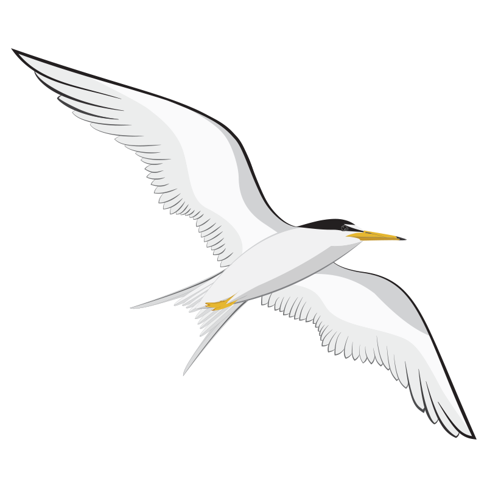
Reimagining the identity
From Banning Ranch Conservancy
to Coastal Corridor Alliance
The organization’s evolution presented a clear challenge: craft a fresh logo and identity that could hold a larger mission. The change was more than a name. It brought new land areas and teams together to protect the Santa Ana River Corridor wetlands under one unified brand.
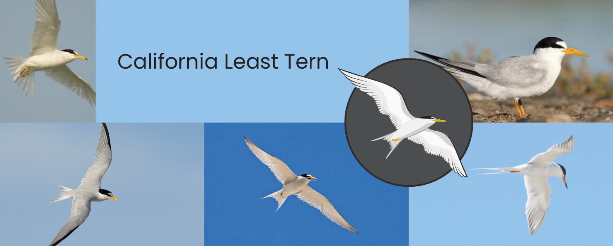
Making the most of the least tern.
The least tern became the heart of the identity exploration. Research photography revealed the bird’s swift, blade-like wings, black-and-white contrast, black tips, and eye mask. That study informed the illustration process and helped refine the mark into something dynamic, recognizable, and connected to the local ecology.
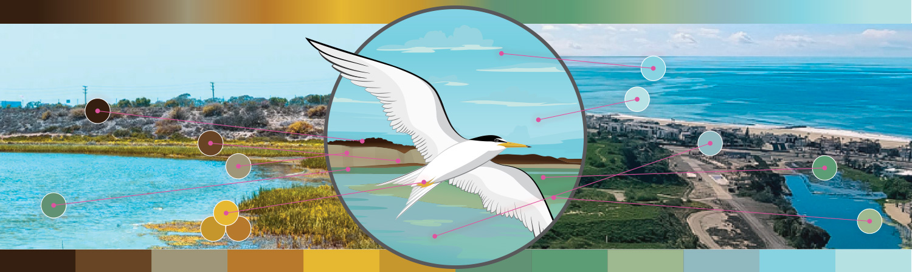
The palette of nature.
The Coastal Corridor Alliance team brought deep knowledge of the local flora and fauna. A board member’s paintings of the wetlands became especially important, capturing the landscape from the bluffs to the waterways. Those colors shaped the system, giving the logo and supporting materials a palette drawn directly from the place itself.
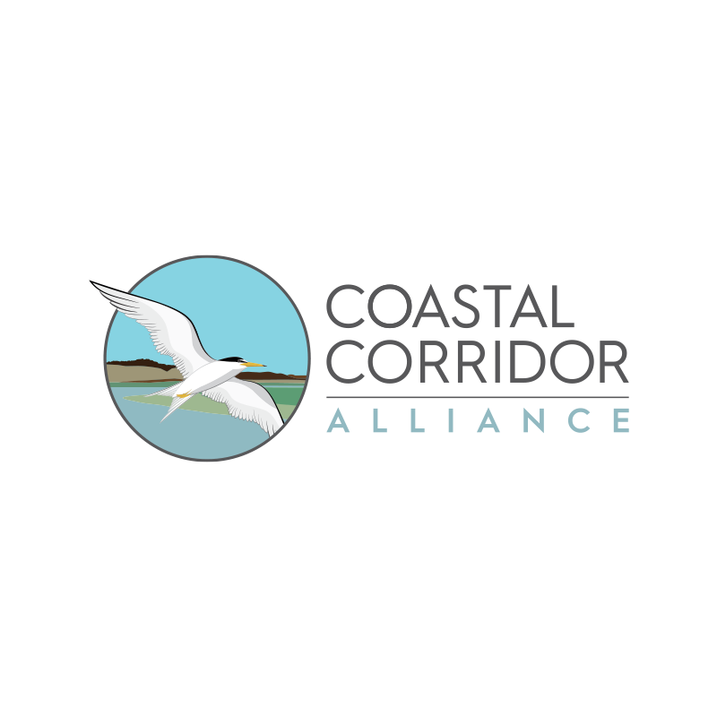
Introducing the CCA logo.
The final mark combines the bird, landscape, and a clean acronym system. Hurme Geometric gave the CCA letterforms a clear, functional structure, while the larger visual system supported monochrome versions, embroidery, social media, color guidelines, and practical day-to-day use.
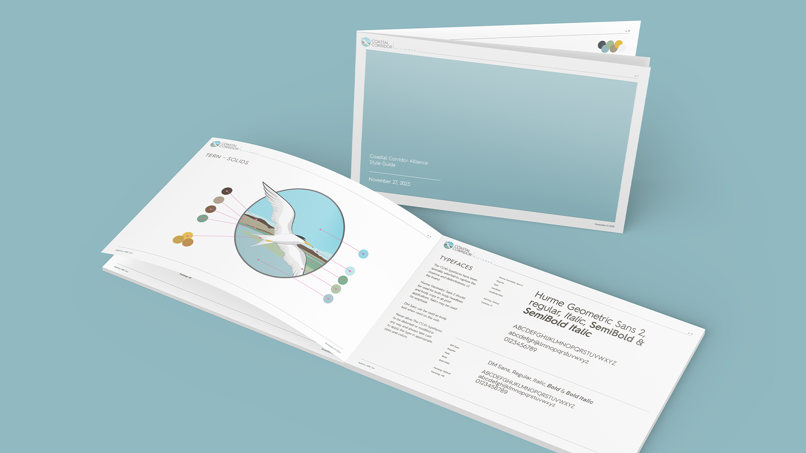
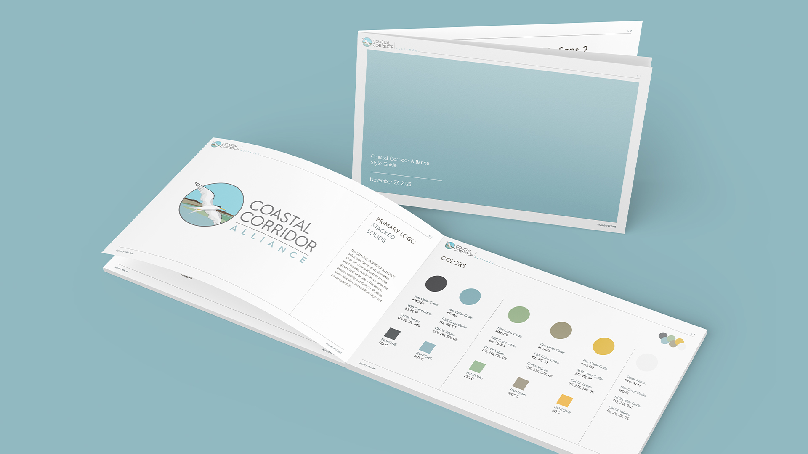
Conservation with a clearer center.
The finished system gave the alliance a more unified voice and a visual structure that could support awareness, fundraising, community education, apparel, and ongoing conservation work.
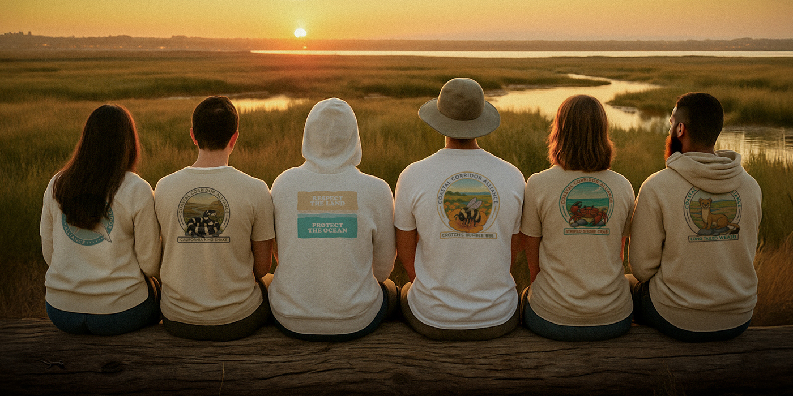
Commerce connected to the cause.
We also built the Coastal Corridor Alliance shop as a working Shopify site. That meant connecting print-on-demand vendors, creating the art for the product line, setting up the merch catalog, and tying the finished store into the live site so awareness, fundraising, and community support could move through one connected system.
Field notes
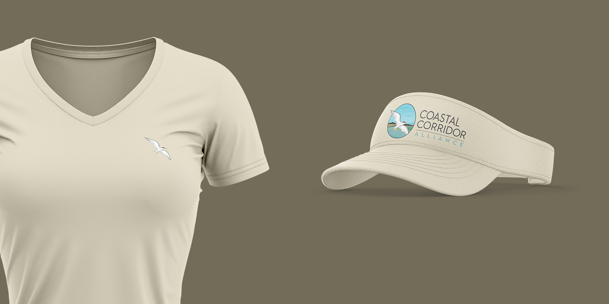
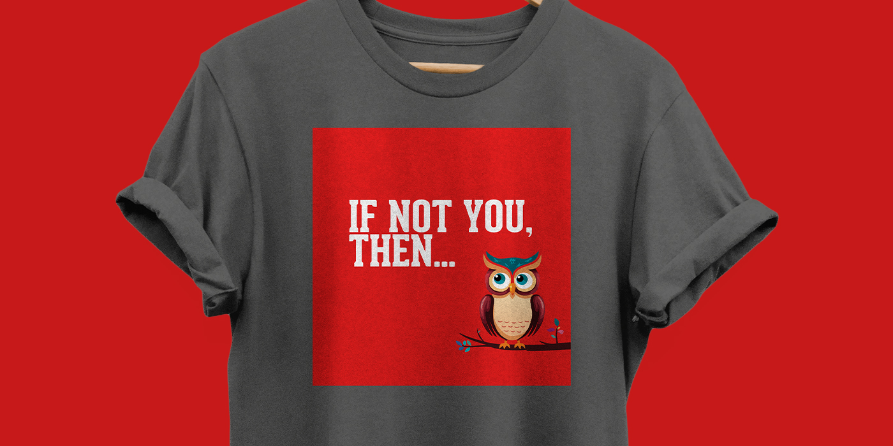
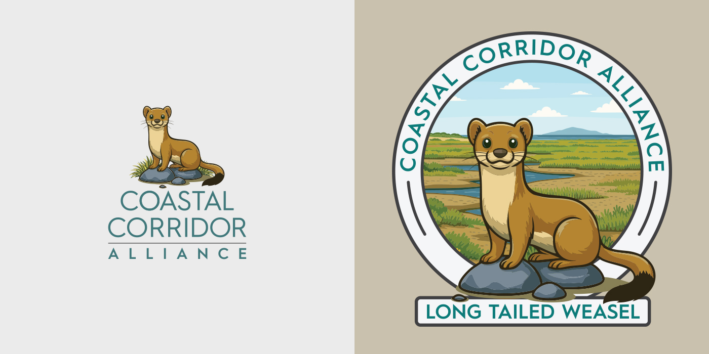
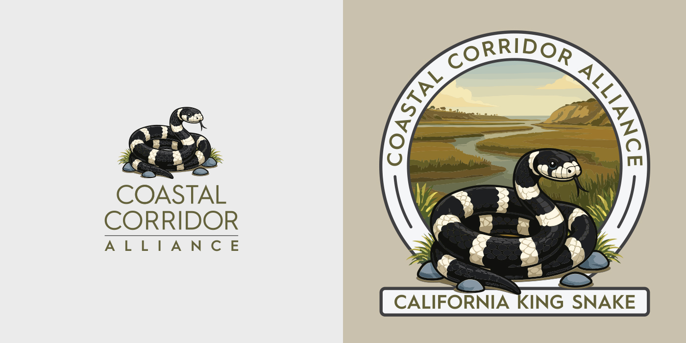
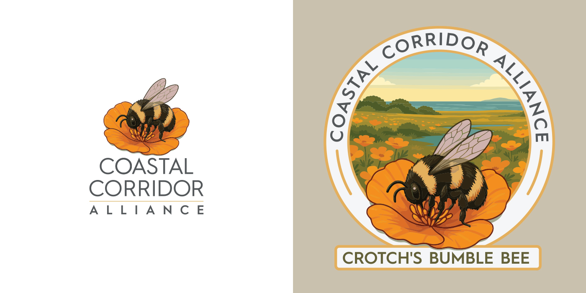
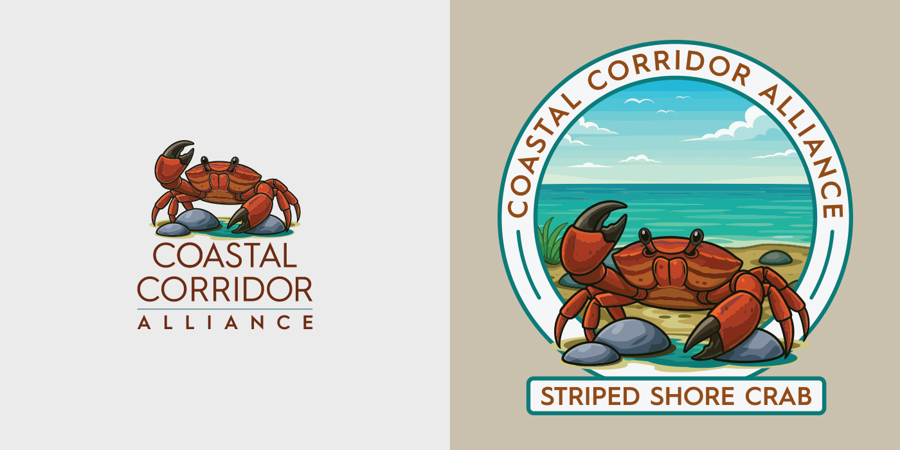
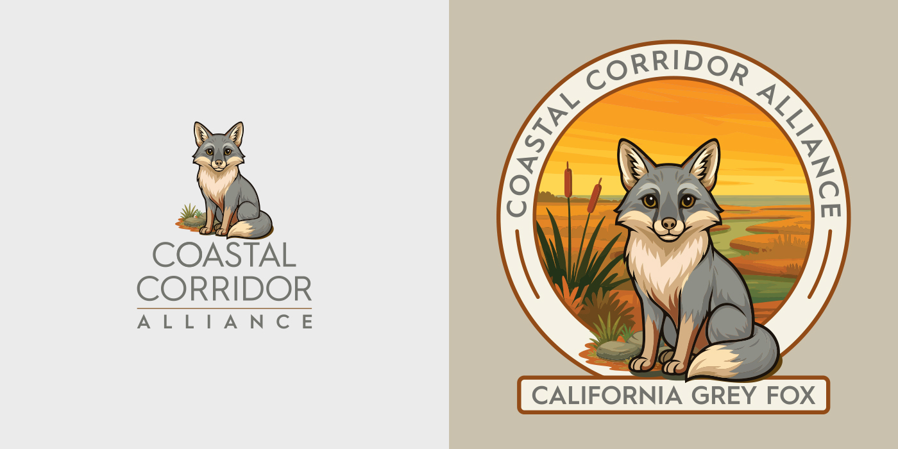